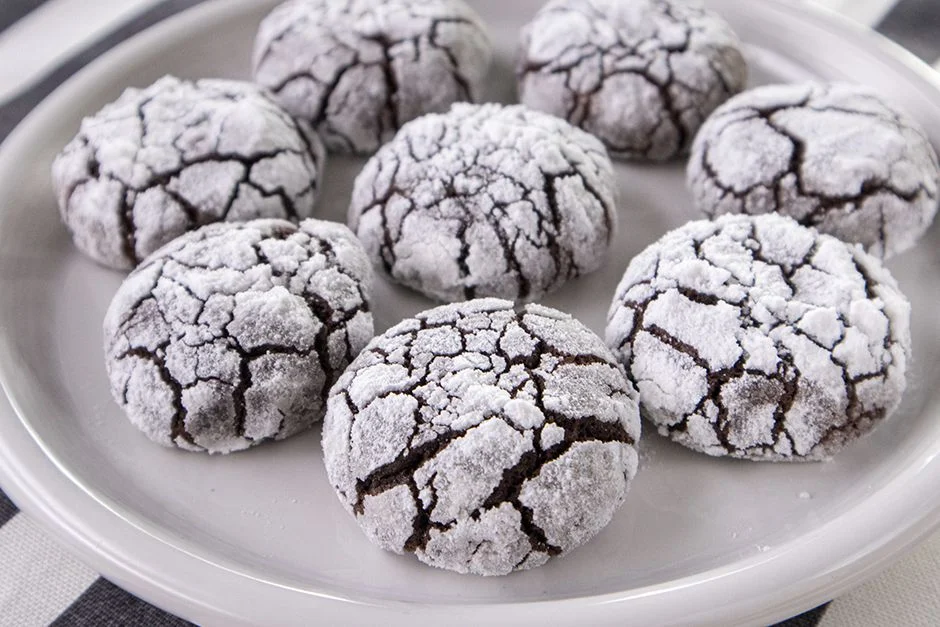

Cracked Cookie Recipe

Description
Our curated collection of cracked cookie recipes invites you to experience the perfect blend of crispy exteriors and gooey,
chewy centers.Our easy-to-follow instructions ensure that both seasoned bakers and kitchen novices can create
these delectable treats with confidence.
Ingredients
- 1 cup granulated sugar
- 1/2 cup vegetable oil
- 1/2 cup cocoa powder
- 2 eggs
- 1.5 cups all-purpose flour
- 1 teaspoon baking powder
- 1 packet vanilla
- 1/2 cup powdered sugar
Steps
- Take sugar into a deep bowl.
- Add cocoa on top.
- Pour in the vegetable oil and mix well.
- Add two eggs and continue to beat.
- Sift in the flour, vanilla, and baking powder.
- Knead until you have a homogeneous mixture. It will be sticky in consistency.
Do not add extra flour for it to harden. Let it rest in the refrigerator for 25 minutes.
- In a separate bowl, add powdered sugar. Using a spoon or ice cream scoop,
take round portions of the dough and coat them in powdered sugar.
- Place the dough balls on a baking sheet lined with parchment paper.
- Bake in a preheated oven at 180 degrees Celsius, without the fan, on the middle shelf,
until they crack, for approximately 15 minutes. Enjoy your meal!